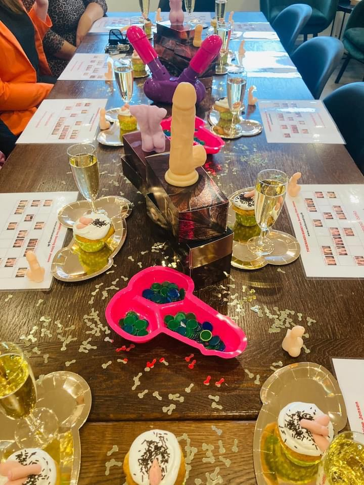
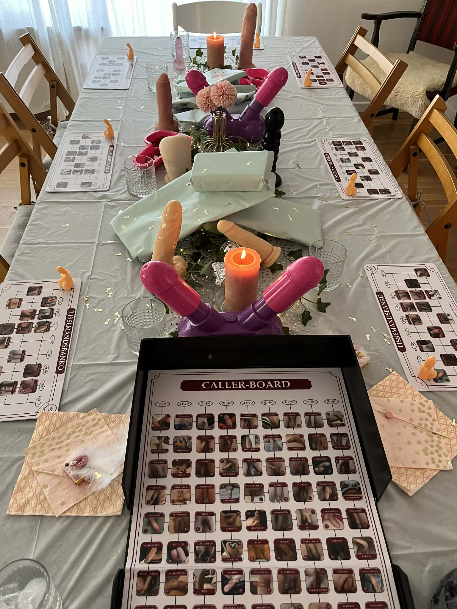

En aften I ikke vidste, I manglede
Er I klar på en aften med røde kinder, latterkramper og de der øjeblikke, hvor man lige tænker: “sagde hun virkelig det?”
Tissemands Bingo er en sjov og anderledes oplevelse til polterabender, fødselsdage og venindeaftener.


Vi spiller bingo – bare ikke helt som du kender det.
I stedet for tal får I 90 forskellige tissemænd, som bliver præsenteret én efter én.
Undervejs opstår der grin, kommentarer og de der øjeblikke, hvor ingen helt ved hvad de skal sige.
Bag Tissemands Bingo står en uddannet sexolog.
Der er plads til grin, rødmen og ærlige snakke – i et trygt tempo.
Varighed: ca. 2 timer
Pris: 2400 kr.
Lokation: Sjælland